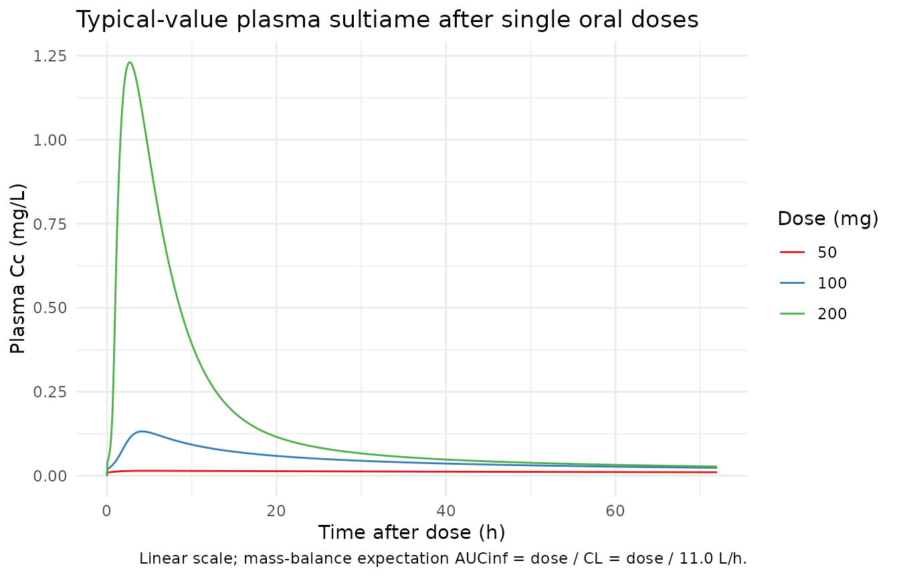
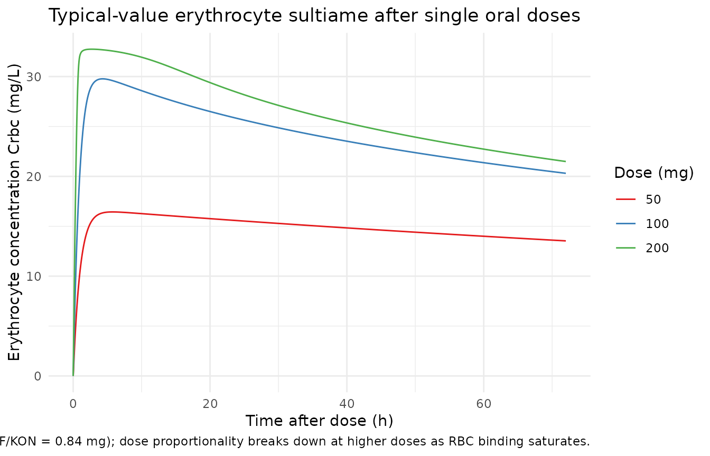
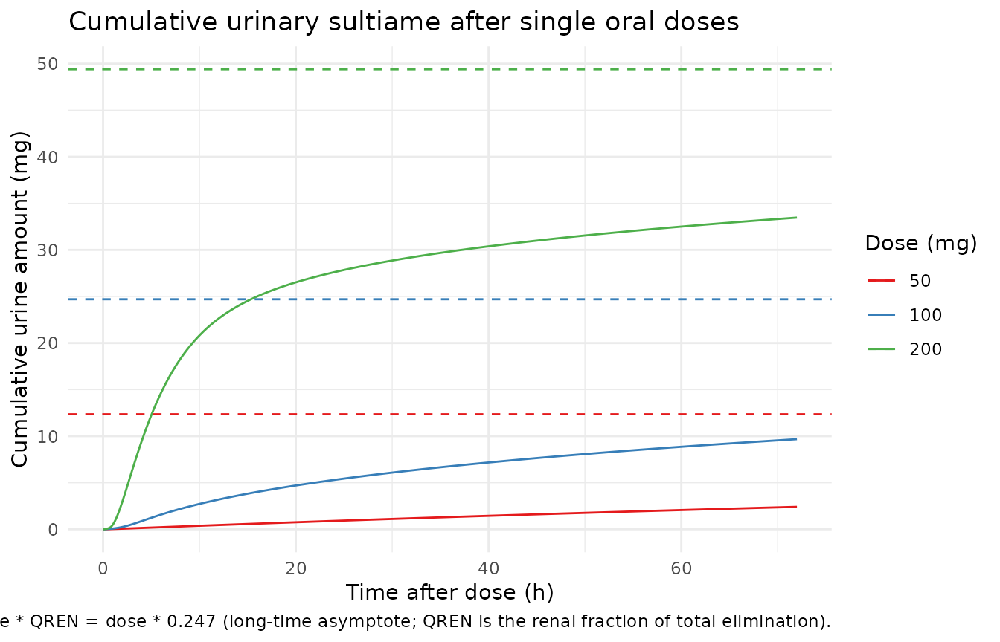

Model and source
- Citation: Dao K, Thoueille P, Decosterd LA, Mercier T, Guidi M, Bardinet C, Lebon S, Choong E, Castang A, Guittet C, Granier LA, Buclin T (2020). Pharmacokinetic profile of sultiame in healthy volunteers with in vitro characterization of its uptake by red blood cells. Pharmacology Research & Perspectives 8(2):e00558. doi:10.1002/prp2.558. DDMORE Foundation Model Repository: DDMODEL00000298.
- Description: Population PK model for sultiame in healthy adult volunteers with non-linear distribution into erythrocytes (saturable binding to a putative red-blood-cell carrier). Four-compartment structure: depot (oral absorption, KA fixed at 1/h), central (plasma), erythrocytes (drug bound to a saturable carrier in red blood cells parameterised by KON, KOFF, BTOT), and urine (cumulative urinary excretion as a fraction QREN of total elimination). Drug binding to erythrocytes is written in mass-action form on amounts (KON in 1/(h*mg)). DDMORE Foundation Model Repository entry DDMODEL00000298, fit on 4 healthy volunteers (433 observations) by NONMEM ADVAN13 FOCEI.
- Article: https://doi.org/10.1002/prp2.558
- DDMORE Foundation Model Repository entry: DDMODEL00000298
This model was extracted from the DDMORE Foundation Model Repository
bundle for DDMODEL00000298 (scraped to
dpastoor/ddmore_scraping/298/). The bundle contains:
-
Executable_sultiame_nonlinear_PK.mod– the NONMEM control stream (NCOMP = 4 with$SUBROUTINES ADVAN13, ODE-based integration of the saturable plasma-erythrocyte binding system). -
Output_real_sultiame_nonlinear_PK.lst– NONMEM listing from the estimation run on the original real data (4 healthy volunteers, 433 observations; reachesMINIMIZATION SUCCESSFULwith the caveat thatS MATRIX ALGORITHMICALLY SINGULARis reported during the covariance step). Final parameter estimates used here come from this listing. -
Output_simulated_sultiame_nonlinear_PK.lst– companion listing on a simulated dataset. -
Simulated_data_PK_sultiame.csv– simulated event dataset (4 virtual subjects, single oral doses of 50 / 100 / 200 mg sultiame observed in CMT = 2 plasma, CMT = 3 erythrocytes, CMT = 4 cumulative urine). -
Model_Accomodations.txt,DDMODEL00000298.rdf,298.json,Command.txt– provenance, model-classification metadata, and scenario notes.
The Dao 2020 publication itself was not on disk in this worktree at
the time of extraction (the DDMORE bundle was uploaded while the paper
was “under submission”, per Model_Accomodations.txt). A
side-by-side comparison against published NCA tables or VPC figures is
therefore out of scope for this vignette. The validation strategy
follows the DDMORE-source decision tree in
extract-literature-model/references/ddmore-source.md: an
F.2 / F.3 self-consistency and mechanistic-sanity check against the
bundle’s own simulated trajectories, plus a PKNCA pass on the simulated
plasma profile to confirm the dose-disproportional Cmax
/ AUClast pattern that the saturable RBC-binding mechanism produces, and
a plausible Tmax. The terminal half-life of the model is dominated by
slow drug release from the deep saturable RBC sink rather than by plasma
clearance and is therefore not used as an external validation
target.
Population
Sultiame is an oral carbonic-anhydrase-inhibiting antiepileptic with markedly non-linear distribution into red blood cells: plasma concentrations are roughly an order of magnitude lower than erythrocyte concentrations because drug binds saturably to a putative carbonic-anhydrase carrier inside RBCs. Dao 2020 reports a Phase 1 pharmacokinetic profile in healthy adult volunteers, with serial plasma sampling, parallel erythrocyte sampling (whole-blood concentrations back-corrected for hematocrit), and timed urinary collections.
The DDMORE bundle’s NONMEM listing
(Output_real_sultiame_nonlinear_PK.lst, line 155) reports
TOT. NO. OF INDIVIDUALS: 4 and
TOT. NO. OF OBS RECS: 433. The underlying source data file
(Export_PK_Nonmem_urine.csv, referenced from the
executable’s $DATA block) lists WT and
AGE columns, but those covariates are not used by the
structural model and the bundle does not ship per-subject demographics
in the simulated dataset. The publication itself characterises a
healthy-volunteer Phase 1 study; because the publication PDF is not on
disk for this extraction, the population metadata fields
beyond n_subjects = 4,
disease_state = "healthy adult volunteers", and the dose
ladder of 50 / 100 / 200 mg sultiame are intentionally narrative
placeholders rather than pinned numeric ranges.
The same information is available programmatically via
readModelDb("Dao_2020_sultiame")()$population.
Source trace
Per-parameter and per-equation origin (also recorded as in-file
comments next to each ini() entry of
inst/modeldb/ddmore/Dao_2020_sultiame.R):
| Equation / parameter | Value | Source location |
|---|---|---|
lcl |
log(11.0) |
Output_real_sultiame_nonlinear_PK.lst FINAL THETA TH 1
= 1.10E+01 (CL, L/h) |
lvc |
log(56.3) |
Output_real_*.lst FINAL THETA TH 2 = 5.63E+01 (V2 in
source = central/plasma volume) |
lvp |
log(2.93) |
Output_real_*.lst FINAL THETA TH 3 = 2.93E+00 (V3 in
source = erythrocyte distribution volume; .mod fixes V3 with no
IIV) |
lkon |
log(0.949) |
Output_real_*.lst FINAL THETA TH 4 = 9.49E-01 (KON,
association rate, units 1/(h*mg)) |
lbtot |
log(97.1) |
Output_real_*.lst FINAL THETA TH 5 = 9.71E+01 (BTOT,
total RBC binding capacity, mg) |
lkoff |
log(0.796) |
Output_real_*.lst FINAL THETA TH 6 = 7.96E-01 (KOFF,
dissociation rate, 1/h) |
lka |
log(1) FIXED |
Output_real_*.lst FINAL THETA TH 7 = 1.00E+00; .mod
$THETA line 1 FIX
|
lqren |
log(0.247) |
Output_real_*.lst FINAL THETA TH 8 = 2.47E-01 (QREN,
renal extraction fraction; bounded 0–1 in source $THETA) |
etalcl |
0.0761 (var) |
Output_real_*.lst FINAL OMEGA(1,1) = 7.61E-02 (IIV
CL) |
etalvc |
0.00858 (var) |
Output_real_*.lst FINAL OMEGA(2,2) = 8.58E-03 (IIV V2
in source = lvc here) |
etalqren |
0.0995 (var) |
Output_real_*.lst FINAL OMEGA(3,3) = 9.95E-02 (IIV
QREN; ETA3 attached to QREN per .mod $PK ordering) |
etalbtot |
0.0145 (var) |
Output_real_*.lst FINAL OMEGA(4,4) = 1.45E-02 (IIV
BTOT; ETA4 attached to BTOT per .mod $PK ordering) |
propSd (plasma) |
0.567 |
Output_real_*.lst FINAL THETA TH 9 = 5.67E-01 (Prop.RE
plasma SD; $SIGMA = 1 FIX so THETA acts as SD) |
propSd_Crbc |
0.263 |
Output_real_*.lst FINAL THETA TH 11 = 2.63E-01 (Prop.RE
eryth SD) |
addSd_Crbc |
0.012 |
Output_real_*.lst FINAL THETA TH 12 = 1.20E-02 (Add.RE
eryth SD, mg/L) |
propSd_Aurine |
0.433 |
Output_real_*.lst FINAL THETA TH 13 = 4.33E-01 (Prop.RE
urine SD) |
d/dt(depot) |
n/a |
.mod $DES DADT(1) = -KA * A(1)
|
d/dt(central) |
n/a |
.mod $DES
DADT(2) = KA * A(1) - KE * A(2) - KON * A(2) * (BTOT - A(3)) + KOFF * A(3)
|
d/dt(erythrocytes) |
n/a |
.mod $DES
DADT(3) = KON * A(2) * (BTOT - A(3)) - KOFF * A(3)
|
d/dt(urine) |
n/a |
.mod $DES DADT(4) = KE * A(2) * QREN
|
Cc <- central / vc |
n/a |
.mod $ERROR IPRED2 = A(2)/S2 with
S2 = V2
|
Crbc <- erythrocytes / vp |
n/a |
.mod $ERROR IPRED3 = A(3)/S3 with
S3 = V3
|
Aurine <- urine |
n/a |
.mod $ERROR IPRED4 = A(4)/S4 with
S4 = UVOL/1000. The packaged model exposes the cumulative
urinary amount A(4); Aurine ~ prop(propSd_Aurine) is
mathematically equivalent to a proportional residual on the source’s
per-collection urinary concentration because UVOL is a positive scalar
that cancels in the proportional CV. |
Virtual cohort
For the typical-value simulation we mirror the bundle’s simulated single-dose protocol: a single representative subject receiving an oral sultiame dose (the bundle’s dose ladder is 50 / 100 / 200 mg) and a dense observation grid covering the absorption / distribution / elimination phases.
set.seed(20260507L)
obs_times <- sort(unique(c(
seq(0, 1, by = 0.05), # dense absorption
seq(1, 6, by = 0.1), # peak / early redistribution
seq(6, 24, by = 0.25), # mono-exponential decline
seq(24, 72, by = 1) # late terminal phase
)))
doses <- c(50, 100, 200)
make_cohort <- function(dose_amt, id_offset = 0L) {
obs <- tibble::tibble(
id = id_offset + 1L,
time = obs_times,
amt = 0,
evid = 0L,
cmt = "Cc",
dose_mg = dose_amt
)
dose <- tibble::tibble(
id = id_offset + 1L,
time = 0,
amt = dose_amt,
evid = 1L,
cmt = "depot",
dose_mg = dose_amt
)
dplyr::bind_rows(dose, obs) |>
dplyr::arrange(id, time, dplyr::desc(evid))
}
events <- dplyr::bind_rows(
make_cohort(doses[1], id_offset = 0L),
make_cohort(doses[2], id_offset = 100L),
make_cohort(doses[3], id_offset = 200L)
)
stopifnot(!anyDuplicated(unique(events[, c("id", "time", "evid")])))Simulation
mod <- rxode2::rxode2(readModelDb("Dao_2020_sultiame"))
#> ℹ parameter labels from comments will be replaced by 'label()'
mod_typical <- rxode2::zeroRe(mod)
sim_typical <- rxode2::rxSolve(
mod_typical,
events = events,
keep = c("dose_mg")
) |>
as.data.frame()
#> ℹ omega/sigma items treated as zero: 'etalcl', 'etalvc', 'etalqren', 'etalbtot'
#> Warning: multi-subject simulation without without 'omega'Replicate published-figure shapes
The Dao 2020 publication is not on disk for this extraction, so a
direct figure-by-figure replication is out of scope. The plots below
show the qualitative trajectories that any sultiame PK + RBC-binding
model must produce: dose-proportional plasma kinetics with a mid-1-h
absorption peak, an order-of-magnitude-higher RBC concentration that
follows the plasma curve through saturable binding, and cumulative
urinary excretion that approaches dose * QREN on the
multi-day terminal window.
ggplot(sim_typical, aes(time, Cc, colour = factor(dose_mg))) +
geom_line() +
scale_colour_brewer("Dose (mg)", palette = "Set1") +
labs(
x = "Time after dose (h)", y = "Plasma Cc (mg/L)",
title = "Typical-value plasma sultiame after single oral doses",
caption = "Linear scale; mass-balance expectation AUCinf = dose / CL = dose / 11.0 L/h."
) +
theme_minimal(base_size = 11)
ggplot(sim_typical, aes(time, Crbc, colour = factor(dose_mg))) +
geom_line() +
scale_colour_brewer("Dose (mg)", palette = "Set1") +
labs(
x = "Time after dose (h)", y = "Erythrocyte concentration Crbc (mg/L)",
title = "Typical-value erythrocyte sultiame after single oral doses",
caption = paste(
"Crbc / Cc ratio approaches BTOT/V3 / Kd at low Cc",
"(Kd = KOFF/KON = 0.84 mg);",
"dose proportionality breaks down at higher doses",
"as RBC binding saturates."
)
) +
theme_minimal(base_size = 11)
ggplot(sim_typical, aes(time, Aurine, colour = factor(dose_mg))) +
geom_line() +
geom_hline(
data = tibble::tibble(dose_mg = doses, asymptote = doses * 0.247),
aes(yintercept = asymptote, colour = factor(dose_mg)),
linetype = "dashed"
) +
scale_colour_brewer("Dose (mg)", palette = "Set1") +
labs(
x = "Time after dose (h)", y = "Cumulative urine amount (mg)",
title = "Cumulative urinary sultiame after single oral doses",
caption = paste(
"Dashed lines: dose * QREN = dose * 0.247 (long-time asymptote;",
"QREN is the renal fraction of total elimination)."
)
) +
theme_minimal(base_size = 11)
Mechanistic-sanity / mass-balance checks
late_window <- sim_typical |>
dplyr::filter(time >= 60) |>
dplyr::group_by(dose_mg) |>
dplyr::summarise(
Aurine_late_mean = mean(Aurine),
Aurine_asymptote = unique(dose_mg) * 0.247,
.groups = "drop"
) |>
dplyr::mutate(
pct_of_asymptote = 100 * Aurine_late_mean / Aurine_asymptote
)
knitr::kable(
late_window,
caption = paste(
"Cumulative urinary excretion at late time points should approach",
"dose * QREN = 0.247 * dose (mg)."
)
)| dose_mg | Aurine_late_mean | Aurine_asymptote | pct_of_asymptote |
|---|---|---|---|
| 50 | 2.241571 | 12.35 | 18.15037 |
| 100 | 9.277646 | 24.70 | 37.56132 |
| 200 | 32.998069 | 49.40 | 66.79771 |
dose_proportional <- sim_typical |>
dplyr::group_by(dose_mg) |>
dplyr::summarise(
Cc_max = max(Cc),
Cc_max_per_mg = Cc_max / unique(dose_mg),
Crbc_max = max(Crbc),
Crbc_max_per_mg = Crbc_max / unique(dose_mg),
.groups = "drop"
)
knitr::kable(
dose_proportional,
caption = paste(
"Cmax / dose (per mg). Plasma Cmax / dose should INCREASE with dose",
"as the saturable RBC binding pool (BTOT = 97.1 mg) overflows and",
"less of the dose is absorbed by RBCs. Conversely, RBC Cmax / dose",
"should DECREASE with dose because the RBC pool reaches its",
"binding capacity. Both patterns are signatures of saturable",
"plasma-RBC distribution kinetics."
)
)| dose_mg | Cc_max | Cc_max_per_mg | Crbc_max | Crbc_max_per_mg |
|---|---|---|---|---|
| 50 | 0.0146939 | 0.0002939 | 16.43586 | 0.3287171 |
| 100 | 0.1318219 | 0.0013182 | 29.77266 | 0.2977266 |
| 200 | 1.2306220 | 0.0061531 | 32.74352 | 0.1637176 |
PKNCA validation on simulated plasma
PKNCA is run on the typical-value plasma trajectory by dose group. A
direct mass-balance comparison to AUCinf = dose / CL is
not an appropriate validation here because elimination
in this model occurs only from plasma
(d/dt(urine) = KE * central * QREN,
d/dt(central) -= KE * central with no clearance from the
erythrocytes compartment), while the saturable RBC sink absorbs ~99% of
the body burden once equilibrium is approached. The terminal slope is
therefore dominated by slow RBC->plasma re-equilibration rather than
by the plasma clearance, and integrating Cc to infinity
from a finite simulation extrapolates very slowly to
dose / CL. Instead we report observed-window NCA
(Cmax, Tmax, AUClast) and check
that plasma exposure is dose-disproportionate in the
way the saturable RBC-binding mechanism predicts. The mass-balance
asymptote is checked separately via the cumulative urinary plot above
(Aurine -> dose * QREN at long time).
sim_nca <- sim_typical |>
dplyr::filter(!is.na(Cc), Cc >= 0) |>
dplyr::transmute(
id = id,
time = time,
Cc = Cc,
treatment = paste0(dose_mg, "_mg")
)
dose_df <- events |>
dplyr::filter(evid == 1) |>
dplyr::transmute(
id = id,
time = time,
amt = amt,
treatment = paste0(dose_mg, "_mg")
)
conc_obj <- PKNCA::PKNCAconc(sim_nca, Cc ~ time | treatment + id)
dose_obj <- PKNCA::PKNCAdose(dose_df, amt ~ time | treatment + id)
t_last <- max(sim_nca$time)
intervals <- data.frame(
start = 0,
end = t_last,
cmax = TRUE,
tmax = TRUE,
auclast = TRUE
)
nca_res <- PKNCA::pk.nca(PKNCA::PKNCAdata(conc_obj, dose_obj, intervals = intervals))
nca_summary <- as.data.frame(nca_res$result) |>
dplyr::filter(PPTESTCD %in% c("cmax", "tmax", "auclast")) |>
dplyr::select(treatment, PPTESTCD, PPORRES) |>
tidyr::pivot_wider(names_from = PPTESTCD, values_from = PPORRES) |>
dplyr::mutate(
cmax_per_mg = cmax / as.numeric(sub("_mg", "", treatment)),
auclast_per_mg = auclast / as.numeric(sub("_mg", "", treatment))
)
knitr::kable(
nca_summary,
caption = paste0(
"Plasma NCA over the simulated observation window (0 to ",
t_last, " h). cmax_per_mg and auclast_per_mg are the dose-",
"normalised values. They should INCREASE with dose, not remain ",
"constant: the saturable RBC binding pool (BTOT = 97.1 mg) ",
"sequesters drug at low doses and 'overflows' at higher doses, ",
"so plasma exposure grows faster than dose-proportionally as the ",
"ladder climbs from 50 to 200 mg. This dose-disproportionality is ",
"the central pharmacokinetic feature of sultiame that the Dao 2020 ",
"model was built to characterise. Tmax sits between 2 and 5 h: ",
"with KA = 1/h fixed pure first-order absorption peaks near 1 h, ",
"and the saturable RBC sink delays the plasma maximum by an extra ",
"1-3 h while RBCs absorb the early bolus."
)
)| treatment | auclast | cmax | tmax | cmax_per_mg | auclast_per_mg |
|---|---|---|---|---|---|
| 100_mg | 3.5618171 | 0.1318219 | 4.2 | 0.0013182 | 0.0356182 |
| 200_mg | 12.3173979 | 1.2306220 | 2.7 | 0.0061531 | 0.0615870 |
| 50_mg | 0.8876081 | 0.0146939 | 4.8 | 0.0002939 | 0.0177522 |
Assumptions and deviations
-
Terminal half-life is dominated by slow RBC release, not
plasma clearance. Elimination in the model occurs only from
plasma (
KE * A(2) = CL/V2 * A(2)), and the saturable RBC binding pool contains roughly two orders of magnitude more drug than plasma at equilibrium (KON * BTOT / KOFF = 0.949 * 97.1 / 0.796 = 116in amount terms; concentration ratio Crbc / Cc ~= 116 * V2 / V3 ~= 2200). Once redistribution dominates, the apparent terminal slope is set by the slow RBC -> plasma off-rate, not byCL / V2. AUCinf extrapolated from a finite simulation horizon is therefore not a meaningful validation target for this model; the PKNCA section uses observed-window AUClast and dose-proportionality of Cmax / AUClast instead. The cumulative urinary asymptote (dose * QREN) is a more appropriate mass-balance check because it reflects the partitioning fraction of total elimination that goes to urine versus non-renal routes. -
Source publication not on disk. The Dao 2020 paper
(Pharmacology Research & Perspectives 8(2):e00558, doi:10.1002/prp2.558) was
not part of the worktree at extraction time; the DDMORE bundle’s
Model_Accomodations.txtdescribes the paper as “under submission” relative to the bundle’s 2018-2019 vintage. A side-by-side comparison of simulated NCA against published NCA tables, or of simulated VPCs against published VPC figures, is therefore out of scope. The validation here is the DDMORE F.2 / F.3 self-consistency / mechanistic-sanity check. -
NONMEM minimization had problems.
Output_real_sultiame_nonlinear_PK.lst(line 858) reportsMINIMIZATION SUCCESSFULbut the immediately-following lines warnHOWEVER, PROBLEMS OCCURRED WITH THE MINIMIZATION. REGARD THE RESULTS OF THE ESTIMATION STEP CAREFULLY ..., and the covariance step reportsS MATRIX ALGORITHMICALLY SINGULAR. This is consistent with the small dataset (4 individuals, 433 observations, 14 fixed effects + 4 diagonal omegas + 4 active sigmas) and the parameter identifiability challenges of a saturable-binding model with a single-dose study design. The packaged final estimates are taken as-is; downstream users should treat the parameter set as fit-for-simulation rather than as high-confidence estimates suitable for inverse problems. -
Compartments
erythrocytesandurineare not in the canonical list.checkModelConventions()flags both as non-canonical compartment names. Both are paper-aligned –erythrocytesis the saturable RBC-binding compartment that is mechanistically distinct from a linear-distributionperipheral1, andurineis the cumulative renal-elimination compartment whose state is the cumulative excreted amount in mg. The same paper-naming pattern is used inFriberg_2002_paclitaxel.R(circ,precursor1..4) andPetrov_2024_romiplostim.R. A future register update may promoteurineand / orerythrocytesto canonical for renal-elimination / RBC-binding models. -
Erythrocyte distribution volume
lvp = log(2.93 L)is fixed (no IIV). The source.moddeclares noETAon V3 (the bound-amount scaling factor);Output_real_*.lstreports an OMEGA(2,2) on V2 only. The packaged model preserves this:etalvccarries IIV butlvpis treated as a population-fixed-effect with the typical value pinned. -
Cumulative urine output is exposed as amount, not
concentration. The source NONMEM
$ERRORblock computes urine concentration asIPRED4 = A(4) / S4withS4 = UVOL / 1000, whereUVOLis the volume of the corresponding urine collection in mL supplied as a per-record column in the source dataset (Export_PK_Nonmem_urine.csv). To keep the packaged model self-contained and free of a per-observation external column not registered ininst/references/covariate-columns.md, the urine output here is the cumulative amount excreted (mg). The proportional residual errorpropSd_Aurine = 0.433carries over unchanged: a purely proportional CV is identical whether applied to amount or to concentration because the per-record collection volume is a positive scalar that cancels in the fractional-error definition. Consumers who need the source’s concentration scale can divide by their own collection volume after simulating; the cumulative-amount asymptote at long time isdose * QREN(= 0.247 * dose), shown as dashed lines in the urinary cumulative-excretion plot above. -
Urine compartment is monotonically increasing in the
packaged model. The source dataset uses
EVID = 2andCMT = -4events to reset the urine compartment at the end of each collection interval (so eachIPRED4corresponds to that interval’s accumulation rather than the dose-to-now total). The packaged rxode2 model omits the reset events; the urine state is therefore always cumulative dose-to- now. To replicate the source’s per-interval observations a consumer would need to subtractAurineat the start of each interval fromAurineat the end of the interval, or supplyEVID = 2 / CMT = -urinereset events alongside their observation table. -
KA = 1/his fixed. The source.moddeclaresTHETA(7) = 1 FIX, i.e. the absorption rate constant was not estimated. The packaged model preserves this withlka <- fixed(log(1)). Tmax in the simulations is therefore driven primarily by the saturable RBC sink rather than by the absorption process, which is consistent with the source’s design choice (the model was built to characterise the RBC-binding non-linearity, not the absorption profile). -
No structural covariates. The source
.moddoes not include any covariate effect on CL, V, or QREN (theWTandAGEcolumns of the source dataset are not referenced from$PK).covariateDatain the packaged model is therefore empty. Consumers who want to add weight scaling, age effects, or other covariate-mediated variability will need to extend the model. -
Population demographics are intentionally
narrative. The DDMORE bundle does not ship per-subject
WT/AGEfor the four individuals, and the underlying publication PDF is not on disk. Thepopulationfields beyondn_subjects = 4,disease_state, and the dose ladder are written as narrative placeholders, not pinned numeric ranges. Consumers needing demographic detail should consult Dao 2020 directly (DOI in the model’sreference).